|
”Locomotion of a Modular Worm-like Robot using a FPGA-based embedded MicroBlaze Soft-processor”. CLAWAR 2004. CSIC. Septiembre-2004 |
|
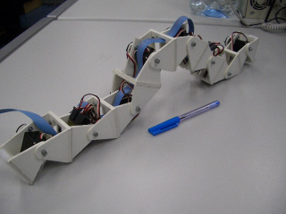 |
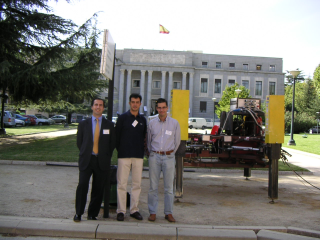 |
Título: “Locomotion of a Modular Worm-like Robot using a FPGA-based embedded MicroBlaze Soft-processor”
Actividad: Exposición del artículo con el mismo nombre. Artículo disponible aquí.
Duración: 15 minutos
Evento: 7th International Conference on Climbing and Walking Robots, CLAWAR 2004.
Organiza:Instituto de automática industrial, CSIC
Lugar: CSIC, Madrid.
Fecha: 22 de Septiembre de 2004
Ponentes:
|
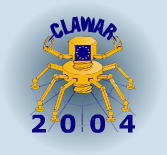 |
Modular reconfigurable robots offer the promise of more versatility, robustness, and low cost. They are composed of simple and small modules, capable of attach and detach one to each other. In this paper, a modular worm-like robot composed of a chain of 8 similar modules is presented. A travelling wave, that moves from the tail to the head, propels the robot forward. The positions of the articulations are calculated using the following parameters: waveform, amplitude, and wavelength. Instead of a conventional architecture, a FPGA-based softprocessor core is utilized. It includes a set of custom peripheral cores, written in VHDL. FPGAs make modular robots more versatile, adding some new featureas to the design of robots like reconfigurable control, hardware reuse, lower cost, fault-recovering, and software/hardware co-design.
|
Descargas |
|
pres-cube-rev.sxi (1,4 MB) |
Presentación para OpenOffice 1.1.3 |
|
pres-cube-rev.pdf (600KB) |
Presentación en PDF |
|
cube-clawar04.pdf (150KB) |
Artículo en PDF |
|
cube-clawar04.tgz (1.4MB) |
Fuentes del artículo para Lyx (Dibujos en Xfig) |
Se condecen permisos para usar, modificar y/o distribuir esta presentación, siempre que se mantenga esta nota.
Artículo completo: [PDF] [HTML] [Más información]
Robot Cube Revolutions
Robot ápodo Cube Reloaded (Versión anterior a Cube Revolutions)
Aplicación libre QCAD, para diseño en 2D. Disponible en Debian (apt-get install qcad)
Aplicación libre Blender, para diseño en 3D. Disponible en Debian (apt-get install blender)
Librerías gráficas GTK
El CLAWAR fue el primer congreso internacional de Robótica al que he asistido. Por ello, estaba muy nervioso. Además era en Inglés y yo nunca había hablado en Inglés en público. ¡¡Tenía que exponer mi artículo al resto de científicos!!, estaba aterrorizado. Tuve la suerte de que se celebró en Madrid y además asistieron Javier de Lope y Alejandro Alonso , por lo que me sentí mucho más arropado. Al menos tendría a alguién con quien hablar en Español ;-)
El congreso comenzó el miércoles 22 de septiembre, a las 9 de la mañana, pero yo desde las 8:15 ya estaba por allí, para irme familiarizando. La primera persona con la que me encontré fue con Houxiang Zhang, un investigador Chino que actualmente está en la Universidad de Hamburgo. Era la primera vez que venía a España. Empezamos a hablar (chapurreando inglés por mi parte, claro) y al final nos hicimos muy amigos. Acabamos el Viernes 24 tapeando por la zona centro de Madrid :-)
El primer día hubo demostraciones. Llevé a Cube Revolutions y lo mostré a los asistentes. Fue bastante distendido porque era la hora del café y había otras demostraciones, en ellas, el robot hexápodo Melanie III de Alejandro Alonso. Justo cuando estaba haciendo algunas demostraciones, aparecieron por sorpresa los medios de comunicación y me sacaron en el informativo de Tele-5 de por la noche y en el del día siguiente por la mañana :-)
|
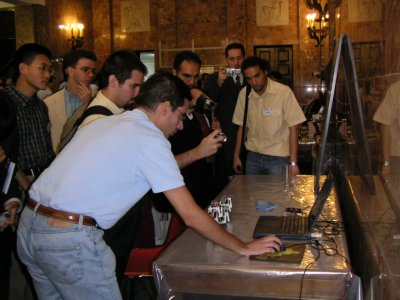 |
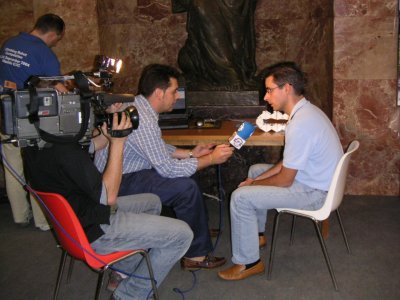 |
Las ponencias se daban en paralelo en tres salas. En las fotos de abajo se ve la sala principal. ¡¡Menos mal que a mí no me tocó hablar en ella!!!
|
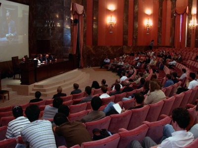 |
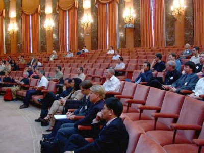 |
El jueves por la noche tuvimos la cena de gala en el Casino de Madrid. En la foto de la izquierda estamos Houxiang, Alejandro, Juan y un estudiante alemán que no recuerdo el nombre :-(
|
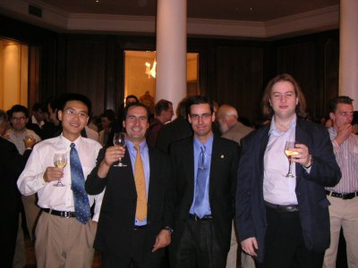 |
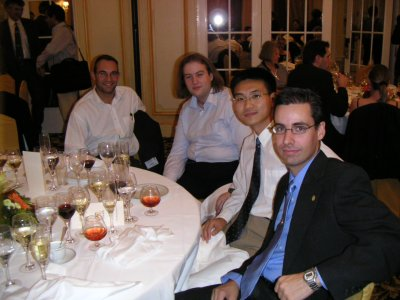 |
Durante el congreso pudimos conocer a mucha gente y hacernos fotos con muchos robots :-). En la foto de la izquierda estamos delante de un robot caminante (no recuerdo el nombre) que anda como si fuese una persona con muletas. Algo curiosísimo. En la foto estamos Alejadro, Martijn Wise (el diseñador del robot), Nera González, una estudiante de Industriales muy interesada en la robótica, el profesor Javier de Lope y yo. En la foto de la derecha estoy posando delante de RoboClimber.
|
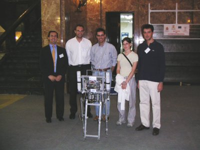 |
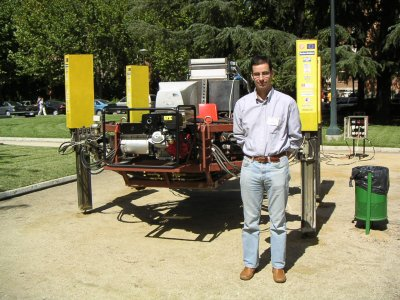 |
...Y el viernes llegó el día de mi charla... Intenté hacerlo lo mejor que pude, pero los nervios no los podía controlar. Espero hacerlo mejor la próxima vez ;-). En la foto de la izquierda estoy junto a Houxiang. Nos hicimos muy amigos y sigo manteniendo contacto con él. Me está ayudando mucho con mi tesis, dándome consejos muy útiles.
|
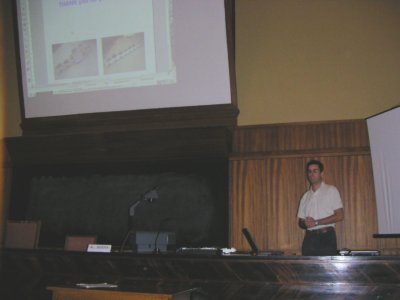 |
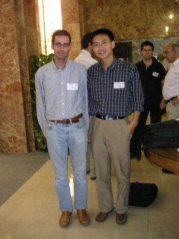 |
A Alejandro Alonso por las fotos.
1/Enero/2005: Añadido enlace a Cube Revolutions
11/Mayo/2005: Publicada información en esta web. Con mucho retraso, lo se ;-)